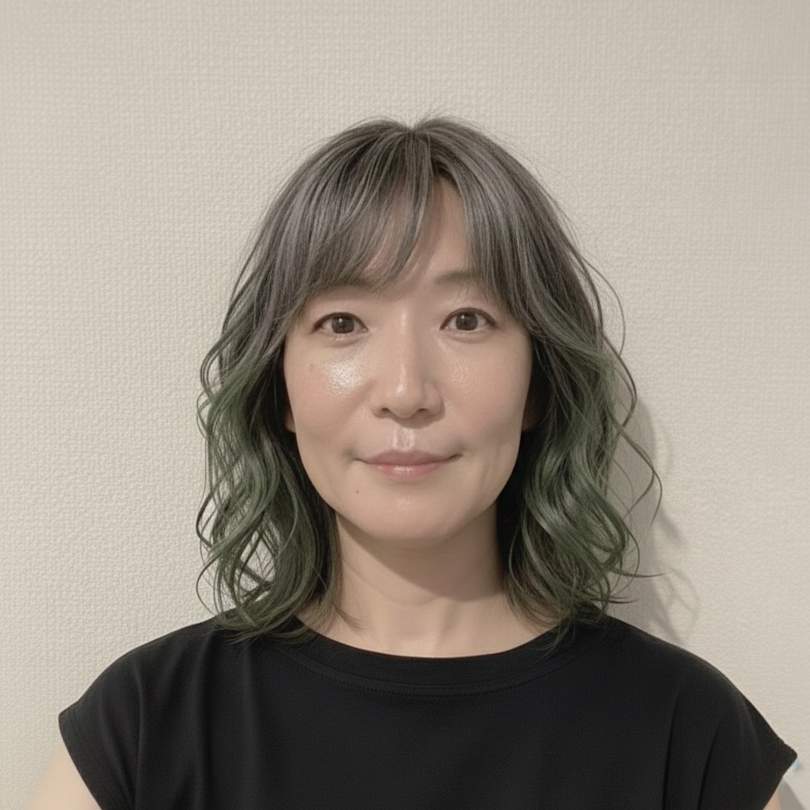

| 氏名 | 戎 桂子（エビス ケイコ） |
|---|---|
| 生年月日 | 1973年11月27日（満52歳） |
| 性別 | 女性 |
| 現住所 | 〒312-0022 茨城県ひたちなか市金上1018-1 ディアスB103 |
| 最寄駅 | JR常磐線 勝田駅（バス10分） |
| 携帯電話 | 090-7720-4820 |
| メール | epis.atelier@gmail.com |

| 1992年 4月 | 東海女子大学 文学部英米文化学科語学コース 入学 |
| 1993年 〜 1994年 | The Academy of English, Cambridge (UK) 6ヶ月語学留学（大学の優秀奨学生選抜による派遣） |
| 1996年 3月 | 東海女子大学 文学部英米文化学科語学コース 卒業 |
| 1996年 4月 | タワーレコード株式会社 入社（契約社員・アルバイト） ※CDバイヤー、音楽ライター、来日アーティストイベントの通訳・翻訳業務に従事 |
| 2000年 12月 | タワーレコード株式会社 退職 |
| 2001年 11月 | 野村インベスター・リレーションズ株式会社に派遣として就業 ※株主総会資料の作成、レイアウトデザイン、構成・文字校正業務に従事（2002年1月まで） |
| 2006年 8月 | 日本放送協会（NHK）に派遣として就業 ※企画編成室にてデータ放送用の企画編成、テキスト記事校正、画像修正に従事（2007年5月まで） |
| 2007年 8月 | 株式会社キャリアライズよりKDDI株式会社へ派遣（営業事務） |
| 2009年 12月 | 株式会社キャリアライズより東京電力株式会社へ派遣（営業事務） |
| 2012年 3月 | ランスタッド株式会社より株式会社常陽銀行へ派遣（テレコミュニケータ） |
| 2012年 9月 | テンプスタッフ株式会社より損保ジャパン株式会社へ派遣（事務） |
| 2014年 1月 | 株式会社キタムラ（契約社員）Apple製品修理受付・英日通訳 |
| 2014年 12月 | テンプスタッフ株式会社より中央労働金庫へ派遣（金融事務） |
| 2016年 1月 | 株式会社テクノプロ（正社員）入社 ※日立パワーソリューションズにて鉄道システム品質保証技術者として従事 |
| 2021年 7月 | 株式会社テクノプロ 一事情により退職 |
| 2021年 8月 | 株式会社スタッフ・サービス・エンジニアリング（正社員）入社 ※日立製作所・日立ハイテクにて品質保証・検証エンジニアとして従事 |
| 2024年 2月 | 【並行活動】フリーランス（グラフィックデザイン）業務受託 ※株式会社Japanソリューションズ様 主催コンペでの採用実績あり（守秘義務遵守のため社名のみ記載） |
| 2026年 1月 | 株式会社スタッフ・サービス・エンジニアリング 会社都合により退職 |
| 2026年 6月 | 現在に至る |
| 2012年 8月 | 証券外務員特別会員二種 取得 |
| 2016年 8月 | 低圧電気取扱業務特別教育 受講（2025年8月 法令改正対応・日立ハイテクにて更新修了） |
| 2019年 5月 | TOEIC® 780点 取得 |
| 2024年 2月 | 日本デザインスクール Webデザイン入門編 クオリティ認定修了 |
| 2024年 5月 | グラフィックアーティストギルド（GAG）入会（2025年1月 中間認定合格） |
| 2024年 8月 | 終活ライフコーディネーター 取得 |